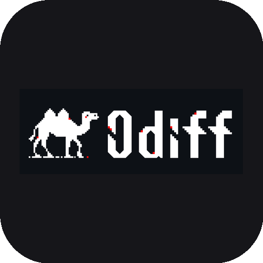

Python Tk GUI + odiff.exe（Zig SIMD 加速）的桌面工具。 支持双图三栏对比，也支持拖入整个文件夹做图案检验与差异热力图； 结果自动保存，分析在后台线程执行，界面不卡顿。 支持 PNG / JPG / WebP / TIFF / BMP，跨格式直接比较。
把图片拖进 Base / Compare 面板，或把整个文件夹拖入窗口做批量分析。
odiff.exe 基于 Zig，支持 SSE2 / AVX2 / AVX512。
Ctrl+滚轮缩放，左键拖拽平移，差异一目了然。
自动收集 PNG / JPG / BMP / TIFF / WebP，逐张统计并输出汇总结果。
PatInspect 原理：多张良品训练均值 / 标准差模板，逐张计算缺陷率。
以模板为基准逐张 odiff，累计每像素差异概率并映射为热力图。
凹陷边框 + 蓝色分段方块，实时显示模板训练与差异统计进度。
批量分析在工作线程运行，进度经队列回主线程，界面保持响应。
PNG / JPG / WebP / TIFF / BMP 任意组合，批量分析自动收集。
teal 桌面、凸起按钮、navy 标题栏，复古外观下保持现代手感。
阈值 0-1 / 忽略抗锯齿 / Diff Mask / 白底叠加 / 差异色。
双图 diff 与批量结果统一保存，命名带时间戳，一键打开目录。
拖入一个图片文件夹（或按 Ctrl+3 选择），工具栏会出现
「图案检验」与「热力图」按钮。
所有结果保存到 D:/JustSmart/ImageDiffPy/Diff/（回退到 APPDATA）。
| 功能 | 原理 | 输出 |
|---|---|---|
| 图案检验 | PatInspect 原理：N 张良品逐像素求均值 p̄(i,j) 与标准差 σ(i,j)，
阈值 A·σ + B；逐张统计超过阈值的缺陷像素。 |
template_<文件夹>_<时间戳>.png平均 / 最大缺陷率、σ 均值 |
| 热力图 | 以训练模板为 Base，逐张执行 odiff --diff-mask，
累计每个像素出现差异的次数 / 张数，映射为黑→蓝→青→绿→黄→红。 |
heatmap_<文件夹>_<时间戳>.png最大概率、有差异像素占比、≥50% 像素占比 |
批量任务在后台线程执行，分析期间可继续缩放 / 平移界面；按钮会临时置灰，切换文件夹会被拦截。
odiff 与 Cognex VisionPro 的 PatInspect（图案检验）都在做逐像素差异检测， 但定位和算法模型不同。完整算法说明见 docs/PatInspect.md ↗。
相同点
A × σ + B，odiff 用 0~1 的 threshold。--ignore 忽略区域。不同点
| 维度 | PatInspect（VisionPro） | odiff（本项目） |
|---|---|---|
| 参考模型 | 统计训练：N 张良品逐像素求均值 p̄(i,j) 与标准差 σ(i,j) | 无训练模型，直接比较 Base / Compare 两张图 |
| 阈值 | 每像素自适应：Threshold(i,j) = A·σ(i,j) + B | 全局标量：max_delta = 35215 × threshold² |
| 光照鲁棒性 | 直方图均衡、均值标准差、Match Tails、Robust Line Fit、局部校正等归一化 | 无归一化，依赖两图采集 / 渲染条件一致 |
| 颜色度量 | 对像素值及其标准差建模，可配合 Sobel 边缘 | 转 YIQ，按 0.5053 / 0.299 / 0.1957 加权平方差 |
| 抗锯齿 | 不专门处理 | 可选用 3×3 邻域同色兄弟像素检测忽略抗锯齿 |
| 差异后处理 | 原始差分超过阈值后减去 offset，输出 thresholded difference | 只标记差异像素并计数，不做二次阈值化 |
| 几何对齐 | PMAlign + PatMax 定位，支持 Pose 传递 | 不做配准；尺寸不同时按重叠区域比较 |
| 加速方式 | 工业运行时（未开源） | Zig SIMD：AVX512 / NEON / RVV，毫秒级 |
| 典型场景 | 产线在线缺陷检测（容忍来料与光照波动） | 截图 / 渲染结果视觉回归（要求像素稳定） |
对本项目的启示
PatInspect 中的 Pat 取自 Pattern（图案），Inspect 意为检验， 准确中文译名为「图案检验」（部分资料译“图案检测”）。 本项目统一使用“图案检验”，核心术语如下：
| 英文 | 中文 | 备注 |
|---|---|---|
| PatInspect | 图案检验 | 亦译“图案检测”，基于训练图案的缺陷检测工具 |
| trained pattern | 训练图案 | 多张良品图像逐像素统计得到的基准图案 |
| training image | 训练图像 | 用于建立训练图案的良品图像 |
| run-time image | 运行图像 | 实际待检图像，亦称“待检图像” |
| standard deviation image | 标准差图像 | 表示训练图案各像素的允许波动 |
| pseudo-standard deviation image | 伪标准差图像 | 单张训练图时由 Sobel Edge 生成 |
| threshold image | 阈值图像 | 每像素的判定阈值 A·σ + B |
| match image | 匹配图像 | 运行图像中与训练区域对应的部分 |
| raw difference image | 原始差分图像 | 训练图案与匹配图像的绝对差 |
| thresholded difference image | 阈值化差分图像 | 超过阈值的差异输出，供 Blob / Histogram 分析 |
| image normalization | 图像归一化 | 补偿运行图像的光照变化 |
| identity | 恒等（不归一化） | 不执行任何归一化 |
| histogram equalization | 直方图均衡化 | 使直方图与训练图案匹配 |
| mean and standard deviation | 均值与标准差 | 匹配直方图的均值与标准差 |
| match tails | 尾部匹配 | 对齐直方图左右尾部 |
| robust line fit | 稳健直线拟合 | 抗大缺陷的拟合方法，耗时更长 |
| local correction | 局部校正 | 按矩形邻域分别归一化 |
| enhanced local correction | 增强局部校正 | 效果更好但更慢 |
| scale coefficient (A) | 比例系数 (A) | 控制边缘对比度 |
| offset coefficient (B) | 偏移系数 (B) | 控制整体亮度 / 判定偏移 |
| Pose | 位姿 | 描述物体位置、旋转、缩放的映射 |
| PMAlign | PMAlign 图案匹配 | 基于 PatMax 的定位工具，为 PatInspect 提供位姿 |
| interpolation mode | 插值模式 | Bilinear（双线性）/ Compatibility（兼容） |
| defect pixel | 缺陷像素 | 超过阈值、被判定为异常的像素 |
| Sobel Edge | Sobel 边缘检测 | 生成伪标准差图像时使用 |
开发模式：
pip install pillow tkinterdnd2 numpy
$env:PYTHONPATH = "src"
python -m odiffdiff.app打包为单文件 exe：
pip install pyinstaller pillow
python build_exe.py
# 产物: dist/ImageDiffPy_<时间戳>.exe注意：tkinterdnd2 依赖 Tcl/Tk DLL 位数与 Python 一致。若报 "Bad exe format"， 拖放功能自动降级为按钮选择，不影响核心 diff 功能。
打包仅收录运行必需的 odiff-windows-x64.exe、图标与 Win95 CSS，不包含 odiff-main.zip。
├── src/odiffdiff/
│ ├── app.py # 入口
│ ├── ui.py # 三栏 Tk 主界面 + 批量分析交互
│ ├── odiff.py # odiff.exe 子进程封装
│ ├── batch.py # 图案检验模板 / 差异热力图
│ └── theme.py # Win95 主题 + 分段进度条
├── assets/
│ ├── odiff-windows-x64.exe # odiff 引擎（运行必需）
│ ├── odiff-icon.png # 方形圆角 app icon
│ ├── app_icon.ico # 窗口 / exe 图标
│ └── 02-windows-95.css # Win95 设计 token
├── docs/ # PatInspect 算法文档（PDF 转 Markdown）
├── legacy/ # 旧版 WPF + Python 存档
├── build_exe.py # PyInstaller onefile 打包
└── pyproject.toml| 组件 | 技术 |
|---|---|
| UI | Python 3.10+ / Tkinter / TkinterDnD2 |
| 图像处理 | Pillow + NumPy |
| Diff 引擎 | odiff.exe（Zig + SIMD） |
| 批量分析 | 均值 / 标准差模板、odiff --diff-mask、概率热力图 |
| 打包 | PyInstaller --onefile --windowed |
应用启动时会尝试写注册表 HKLM\SOFTWARE\Microsoft\Windows\CurrentVersion\FileSystem\LongPathsEnabled=1
（需管理员）。应用层面也通过截断 + MD5 hash 兜底，输出文件名 ≤ 120 字符。
手动开启一次即可全系统受益：
# 管理员 PowerShell
New-ItemProperty -Path 'HKLM:\SOFTWARE\Microsoft\Windows\CurrentVersion\FileSystem' `
-Name LongPathsEnabled -Value 1 -PropertyType DWord -Forceodiff <base.png> <compare.png> [diff.png] [options]
Options:
-t, --threshold <0.0-1.0> 差异阈值 (默认 0.1)
--aa, --antialiasing 忽略抗锯齿像素
--diff-color <#rrggbb> 差异高亮色
--diff-mask 仅输出变更像素（透明底）
--diff-overlay <0.5> 白底叠加
--parsable-stdout 机器可读输出: count;percentage